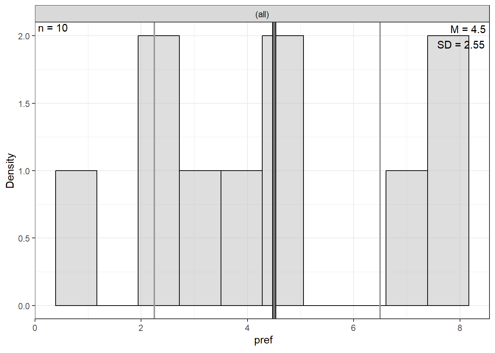

4 Multiple Regression: “Sport Skill”
Darlington & Hayes, Chapter 3’s second example
# library(remotes)
# remotes::install_github("sarbearschwartz/apaSupp")
library(tidyverse)
library(flextable)
library(apaSupp)
library(modelsummary)
library(parameters)
library(effectsize)
library(interactions)
library(performance)
library(effects)
library(ggResidpanel)4.1 PURPOSE
4.1.2 Data Description
Independent Variables (IV, \(X\))
* soft skill at softball
* basket skill at basketball
Dependent Variable (DV, \(Y\))
* pref On a scale from 1 to 9, which sport do you prefer?”
+ 1 = much prefer softball
+ 5 = no preference
+ 9 = much prefer basketball
df_sport <- tibble::tribble(~id, ~soft, ~basket, ~pref,
1, 4, 17, 1,
2, 56, 60, 3,
3, 25, 3, 8,
4, 50, 52, 4,
5, 5, 16, 2,
6, 72, 84, 2,
7, 100, 95, 5,
8, 39, 20, 8,
9, 81, 75, 5,
10, 61, 47, 7)df_sport %>%
dplyr::select("ID" = id,
"Softball Skill" = soft,
"Basketball Skill" = basket,
"Preference Score" = pref) %>%
flextable::flextable() %>%
apaSupp::theme_apa(caption = "D&H TAble 3.5 (pg 78) Skill at Softball, Basketball, and Preference") %>%
flextable::colformat_double(digits = 0)ID | Softball Skill | Basketball Skill | Preference Score |
|---|---|---|---|
1 | 4 | 17 | 1 |
2 | 56 | 60 | 3 |
3 | 25 | 3 | 8 |
4 | 50 | 52 | 4 |
5 | 5 | 16 | 2 |
6 | 72 | 84 | 2 |
7 | 100 | 95 | 5 |
8 | 39 | 20 | 8 |
9 | 81 | 75 | 5 |
10 | 61 | 47 | 7 |
4.2 EXPLORATORY DATA ANALYSIS
4.2.1 Univariate Statistics
Center: mean and median Spread: standard deviation, range (max - min), interquartile range (Q3 - Q1)
df_sport %>%
dplyr::select("Softball Skill" = soft,
"Basketball Skill" = basket,
"Preference Score" = pref) %>%
apaSupp::tab_desc(caption = "Summary Statistics")Measure | NA | M | SD | min | Q1 | Mdn | Q3 | max |
|---|---|---|---|---|---|---|---|---|
Softball Skill | 0 | 49.30 | 31.59 | 4.00 | 28.50 | 53.00 | 69.25 | 100.00 |
Basketball Skill | 0 | 46.90 | 31.93 | 3.00 | 17.75 | 49.50 | 71.25 | 95.00 |
Preference Score | 0 | 4.50 | 2.55 | 1.00 | 2.25 | 4.50 | 6.50 | 8.00 |
Note. NA = not available or missing. Mdn = median. Q1 = 25th percentile, Q3 = 75th percentile. N = 10. | ||||||||


4.2.3 Bivariate Statistics
df_sport %>%
dplyr::select("Softball Skill" = soft,
"Basketball Skill" = basket,
"Preference Score" = pref) %>%
apaSupp::tab_cor(caption = "Unadjusted, Pairwise Correlations")Variables | r | p | ||
|---|---|---|---|---|
Softball Skill | Basketball Skill | 0.920 | < .001 | *** |
Softball Skill | Preference Score | 0.210 | .562 | |
Basketball Skill | Preference Score | -0.190 | .590 | |
Note. r = Pearson's Product-Moment correlation coefficient. N = 10. | ||||
* p < .05. ** p < .01. *** p < .001. | ||||
4.2.4 Bivariate Visualization
df_sport %>%
dplyr::select("Softball Skill" = soft,
"Basketball Skill" = basket,
"Preference Score" = pref) %>%
data.frame %>%
GGally::ggscatmat() +
theme_bw()
df_sport %>%
ggplot(aes(x = soft,
y = pref)) +
geom_point() +
geom_smooth(method = "lm",
formula = y ~ x) +
ggpubr::stat_regline_equation(label.x = 75,
label.y = 1,
size = 6) +
theme_bw() +
labs(x = "Softball Skill",
y = "Preference")
df_sport %>%
ggplot(aes(x = basket,
y = pref)) +
geom_point() +
geom_smooth(method = "lm",
formula = y ~ x) +
ggpubr::stat_regline_equation(label.x = 75,
label.y = 1,
size = 6) +
theme_bw() +
labs(x = "Basketball Skill",
y = "Preference")
4.3 REGRESSION ANALYSIS
- The dependent variable (DV) is preference (\(Y\))
- The independent variable (IVs) are skill levels (\(X\))
4.3.1 Fit the Models
fit_lm_soft <- lm(pref ~ soft,
data = df_sport)
fit_lm_basket <- lm(pref ~ basket,
data = df_sport)
fit_lm_both <- lm(pref ~ soft + basket,
data = df_sport)list("Just\nSoftball" = fit_lm_soft,
"Just\nBasketball" = fit_lm_basket,
"Softball\nand Basketball" = fit_lm_both) %>%
modelsummary::modelsummary(output = "flextable",
fmt = 2,
estimate = "{estimate} ({std.error})",
statistic = "{p.value}{stars}",
stars = c('*' = .05, '**' = .01, '***' = .001),
gof_map = c("r.squared",
#"adj.r.squared",
"rmse"),
coef_rename = c("soft" = "Softball Skill",
"basket" = "Basketball Skill")) %>%
apaSupp::theme_apa(caption = "Parameter Estimates for Preference REgressed on Skills in Softball and Basketball",
p_note = "apa") %>%
flextable::hline(i = 6)
| Just | Just | Softball |
|---|---|---|---|
(Intercept) | 3.67 (1.61) | 5.23 (1.55) | 3.90 (0.20) |
0.05 | <0.01** | <0.01*** | |
Softball Skill | 0.02 (0.03) | 0.20 (0.01) | |
0.56 | <0.01*** | ||
Basketball Skill | -0.02 (0.03) | -0.20 (0.01) | |
0.59 | <0.01*** | ||
R2 | 0.044 | 0.038 | 0.987 |
RMSE | 2.37 | 2.37 | 0.27 |
* p < .05. ** p < .01. *** p < .001. | |||
We call a set of regressors complementary if \(R^2\) for the set exceeds the sum of the individual values of \(r^2_{YX}\) . Thus, complementarity and collinearity are opposites, though either can occur only when regressors in a set are intercorrelated.
4.3.2 Semipartial Correlation
# A tibble: 2 × 5
Term r2_semipartial CI CI_low CI_high
<chr> <dbl> <dbl> <dbl> <dbl>
1 soft 0.949 0.95 0.756 1
2 basket 0.943 0.95 0.737 14.3.3 Venn Diagram - Variances
[1] 6.5[1] 6.216137[1] 6.254138[1] 0.08349447[1] 6.416506[1] 0.1623674[1] 0.2003681[1] 6.053774.3.4 Venn Diagram - Proportions
Total Variance in Preference Explained by Both Skills
[1] 0.9871547Variance in Preference Uniquely Explained by Softball skills, across all Basketball skill levels
[1] 0.0249796Variance in Preference Uniquely Explained by Basketball skills, across all Softball skill levels
[1] 0.03082587Variance in Preference Explained by Softball skills, when holding Basketball skill constant
[1] 0.6604009[1] 0.7058631